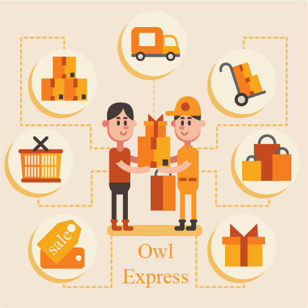

Owl-Express คืออะไร ?
Owl-Express คือ บริการส่งของส่งไวปานสายฟ้า
หากคุณคิดจะส่งของอย่าไปแคร์kerryมันช้า มันหน่อม มันกาก ต้องOwl-Express เท่านั้น ที่ว่องไว ไวมาก ไวจนมองไม่ทัน ราวกับว่าโยนของให้เพื่อนเลยทีเดียว
flash_on
เร็ว
ถึงมือผู้รับภายใน 24ชั่วโมง หรือตามต้องการของคุณ
accessibility
ยืดหยุ่น
สามารถเลือกเวลารับของล่วงหน้าได้ ไม่ว่าคุณจะว่งหรือไม่ว่างคุณก็สามารถเลือกเวลาที่เราจะมารับของของคุณได้
verified_user
สะดวก
ไม่ว่าสภาพอากาศจะเป็นอย่างไร รถจะติด พี่ตูนจะวิ่งอยู่ไหม เราจะตัดหน้าพี่ตูนไปส่งถึงมือท่าน
check_circle
ได้บุญกุศล
รายได้ 10% หลังจากหักค่าใช้จ่ายแล้ว 5% เราจะมอบแก่โครงการก้าวคนละก้าวของพี่ตูน
เกี่ยวกับ Owl-Express

OWL-Express บริษัทจัดส่งสินค้าของเรา จะช่วยให้คุณสามารถจัดส่งสินค้าได้ตามที่ต้องการไม่ว่าสภาพอากาศจะเป็นอย่างไร คุณว่างเวลาไหน คุณอยู่ที่ไหน คุณไม่ต้องไปถึงบริษัทของเรา เราก็ไปรับส่งของพัสดุของท่านถึงทีได้ เพียงแค่กรอกข้อมูลและชำระค่าบริการ พนักงานของเราก็จะจัดส่งสินค้าให้ท่าน!! ตอบโจทย์ความต้องการของคนยุค 4.0 ที่แท้จริง